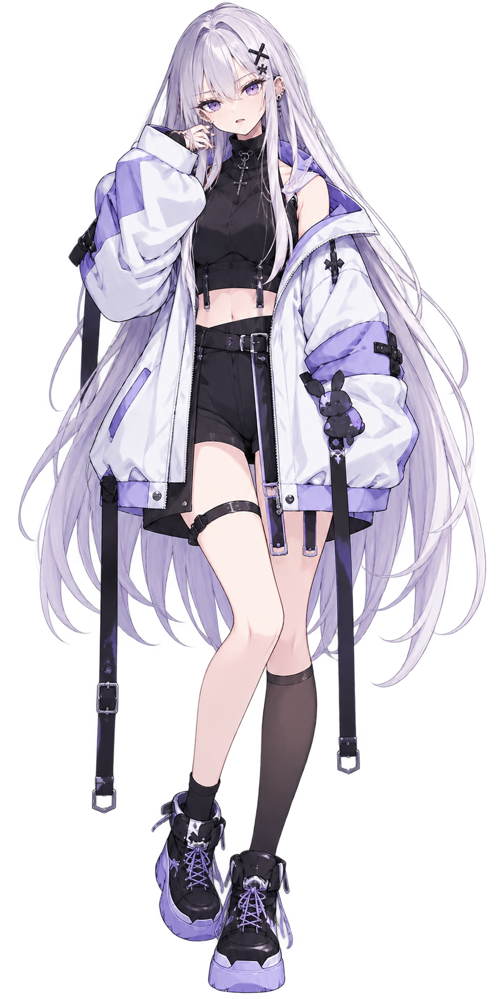

QUARTET
「寝てない。目を閉じてただけ。」

名前： Ria / リア
年齢： 17歳
誕生日： 12月15日
身長： 162.5cm
出身： 東京
現在： ニュージーランド留学中
活動： 個人VTuber
配信： Twitch
活動開始： 2023年後半
イメージカラー： 紫 × 白
ファンネーム： 帰宅部
呼び名： 部長
X： @ria_zzz
初対面やまだあまり知らない相手の前では比較的おとなしいが、 仲良くなると一気にうるさくなるタイプ。
かなりの負けず嫌いで、特にゲームになるとそれが顕著。 普段の少し気だるそうな雰囲気と、 ゲーム中の騒がしさとのギャップも特徴のひとつ。
VALORANT / APEX /ホラー / Minecraft / PICO PARK / 雑談
現在ランク： Diamond 3
最高ランク： Ascendant 3
現在ランク： Diamond 2
最高ランク： Master
ゲーム配信が中心。 負けず嫌いな性格もあり、ゲーム中は普段よりかなり騒がしくなる。 特に仲の良い相手との配信では遠慮がなくなり、 QUARTETメンバーとのコラボでは普段以上に自由。
Ria・Ren・Shin・Yunaの4人。 昔から一緒にゲームをしている仲で、 4人の呼び名として「QUARTET」が定着している。
LONGTIME PARTNER
長年のゲーム仲間。 普段は言い合いや喧嘩のようなやり取りが多いが、 ゲームになると妙に息が合い、 連携もかなり良い。
RenはRiaが落ち込んでいても無理に聞き出さず、 Ria本人が話すまで待つタイプ。 二人きりでは「りっちゃん」と呼ぶこともある。
これ以上にない大親友であり悪友だと お互いが公言している。
BROTHER & SISTER
お兄ちゃんと妹のような関係。 落ち着いていて面倒見のいいShinと、 自由に振る舞うRiaという組み合わせ。
ShinがRiaを見守ったり、 世話を焼いたりすることも多い。
SENIOR & JUNIOR
頼れるお姉さんと後輩のような関係。 RiaにとってYunaは頼りになる存在。
普段は自由なRiaも、 Yunaの前ではどこか後輩らしい一面を 見せることがある。
FAN NAME
WELCOME HOME.
Riaのファンネーム。 Ria本人は「部長」と呼ばれている。
SOCIAL
「大声を出したら即終了」というルールで始まった VALORANT配信。 結果は17分で終了。
ホラーゲームでは、 驚いた瞬間に英語が飛び出すことがある。
ゲーム中、 野良の味方などに褒められると 分かりやすく機嫌が良くなる。
「寝てない。目を閉じてただけ。」
Riaらしい一言のひとつ。